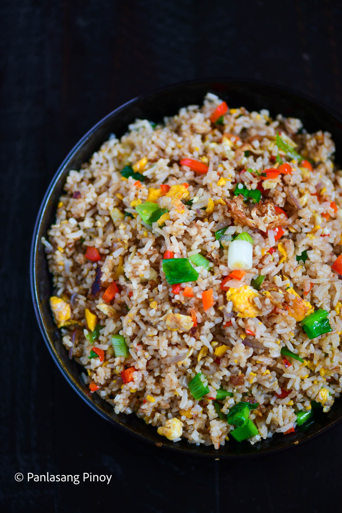

Egg Fried Rice

"No fuss, no frills, all deliciousness—that's the magic of the glorious egg fried rice."
Egg fried rice—and fried rice in general, really—is a huge part of Asian cuisine. We know how much Filipinos love rice, and for other Asian countries this is no different. Indeed, fried rice is a very generic term that houses a lot of cultures across different countries.
Ingredients:
- 4 eggs
- 4 cups leftover rice
- 1 onion chopped
- 1/2 bell pepper chopped
- 3 sweet peppers chopped
- 2 tablespoons soy sauce
- 1 teaspoon sesame oil
- 3/4 cup green onion chopped
- 1/4 teaspoon salt
- 1/2 teaspoon sugar optional
- 4 tablespoons cooking oil
Instructions
- Crack the eggs and place in a bowl.
- Heat oil in a wok. Once the oil gets hot, pour the eggs into the wok. Cook until the bottom part turns brown and somewhat crispy. Turn the eggs over and do the same to the other side.
- Add the peppers and onion. Sauté the ingredients for 1 minute while breaking the eggs apart.
- Add half of the leftover rice. Stir fry for 2 minutes.
- Add the remaining rice. Continue cooking until all the ingredients are well blended.
- Pour the sesame oil and soy sauce. Continue stir frying for 2 minutes.
- Season with salt and sugar and add the green onions. Toss until well blended.
- Transfer to a serving plate. Serve with your favorite main dish.
- Share and enjoy!
Home Page
Reference